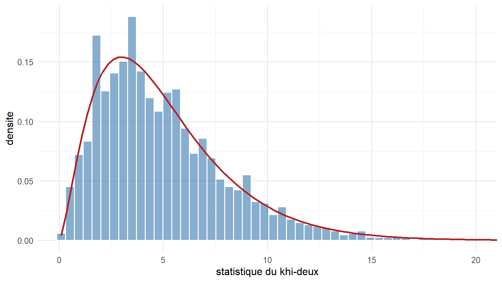
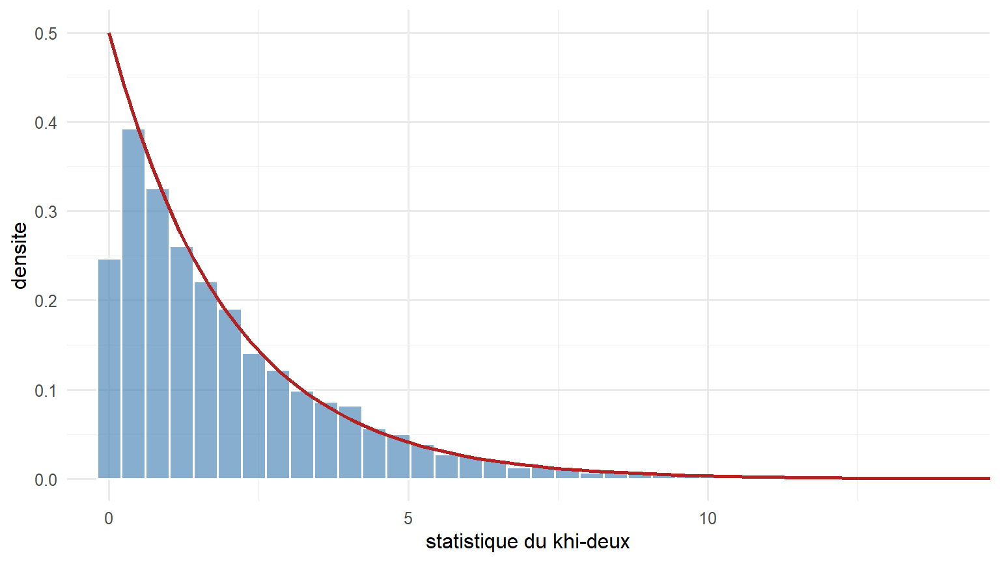

Le test du khi-deux : confronter des effectifs a une hypothese
Test de conformite, test d’independance, et degres de liberte
Beaucoup de donnees se presentent sous forme d’effectifs repartis en categories : le nombre d’individus de chaque groupe sanguin, le nombre de descendants de chaque phenotype, le nombre de fois ou chaque face d’un de est sortie. Le test du khi-deux permet de decider si ces effectifs observes sont compatibles avec une hypothese, ou si l’ecart est trop grand pour etre attribue au seul hasard de l’echantillonnage. Nous verrons sa logique, ses deux usages principaux, et le point qui revient dans tout ce cours : le compte des degres de liberte.
- Variable categorielle : variable qui classe les individus en categories, sans ordre numerique, par exemple le groupe sanguin ou le phenotype.
- Effectif observe : le nombre d’individus reellement comptes dans une categorie. On le note \(O\).
- Effectif attendu : le nombre d’individus que l’hypothese testee predit dans cette categorie. On le note \(E\).
- Hypothese nulle : l’hypothese que l’on met a l’epreuve, par exemple un de equilibre ou l’independance de deux caracteres. Le test cherche a savoir si les donnees la contredisent.
- Statistique de test : un nombre calcule sur les donnees, qui resume l’ecart entre observe et attendu.
- Loi du khi-deux : la loi de probabilite a laquelle on compare cette statistique lorsque l’hypothese nulle est vraie.
- Degres de liberte : le nombre de quantites libres qui fixe la forme de cette loi de reference (voir le chapitre sur l’estimation de la variance).
- p-value : la probabilite d’observer un ecart au moins aussi grand que celui mesure, si l’hypothese nulle etait vraie.
1 Le principe : comparer effectifs observes et attendus
L’idee est de confronter, categorie par categorie, ce que l’on observe a ce que l’hypothese predit. Pour chaque categorie, on calcule l’ecart entre l’effectif observe \(O\) et l’effectif attendu \(E\), on l’eleve au carre pour qu’ecarts positifs et negatifs ne se compensent pas, et on divise par \(E\) pour ramener cet ecart a l’echelle de ce qui etait attendu. La somme de ces termes sur toutes les categories est la statistique du khi-deux :
\[ \chi^2 = \sum_{\text{categories}} \frac{(O - E)^2}{E} . \]
Chaque terme mesure donc un ecart relatif : un ecart de 10 individus est negligeable si on en attendait 1000, mais considerable si on en attendait 5. La division par \(E\) traduit exactement cette mise a l’echelle. Plus les observations s’ecartent des predictions, plus la statistique est grande. Le test est de ce fait toujours unilateral : n’importe quel ecart, dans un sens ou dans l’autre, augmente la statistique, et c’est seulement une valeur grande qui conduit a rejeter l’hypothese.
Reste a savoir a partir de quelle valeur l’ecart devient anormalement grand. La reponse vient de la loi de reference, la loi du khi-deux, dont la forme depend du nombre de degres de liberte.
2 Deux usages a bien distinguer
Le meme calcul sert a deux questions differentes.
Le test de conformite compare la repartition observee d’une variable a une repartition theorique donnee. Le de est-il equilibre ? Une descendance suit-elle un rapport mendelien 3:1 ? Une population respecte-t-elle les proportions de Hardy-Weinberg ? On confronte les effectifs des categories a ceux qu’une loi de reference predit.
Le test d’independance examine si deux variables categorielles sont liees. Les donnees se presentent alors dans un tableau croise, appele tableau de contingence, et l’on teste si la repartition selon une variable depend de l’autre. Deux locus segregent-ils independamment ? Un traitement modifie-t-il la repartition des issues ?
Les deux reposent sur la meme statistique, mais le calcul des effectifs attendus et le nombre de degres de liberte different. Traitons-les l’un apres l’autre.
3 Le test de conformite
Prenons le de a six faces. L’hypothese nulle est qu’il est equilibre : chaque face a la probabilite \(1/6\). Sur \(n\) lancers, l’effectif attendu de chaque face est donc \(E = n/6\). On compare les six effectifs observes a cette valeur commune.
Le nombre de degres de liberte se compte comme dans le chapitre sur la variance : nombre de categories, moins une unite par contrainte, moins une par parametre estime. Ici il y a 6 categories et une seule contrainte, celle que la somme des effectifs vaut \(n\). Aucune probabilite n’est estimee sur les donnees, puisque les \(1/6\) sont fixes par l’hypothese. Il reste donc
\[ \text{ddl} = 6 - 1 = 5 . \]
Verifions par simulation que la statistique, calculee sur des des reellement equilibres, suit bien une loi du khi-deux a 5 degres de liberte.
Code
moyenne de la statistique
5 Code
tibble(stat = stat) |>
ggplot(aes(stat)) +
geom_histogram(aes(y = after_stat(density)), bins = 60,
fill = "#4682b4", colour = "white", alpha = 0.65) +
stat_function(fun = dchisq, args = list(df = 5), colour = "firebrick", linewidth = 1) +
coord_cartesian(xlim = c(0, 20)) +
labs(x = "statistique du khi-deux", y = "densite")
Un de reellement truque produit au contraire des ecarts systematiques, donc une statistique souvent grande. La puissance du test est la probabilite de detecter ce truquage, c’est-a-dire la proportion d’experiences ou il est repere.
Code
rejet du de equilibre (seuil 5 %)
0.7228 Environ trois experiences sur quatre reperent ce de truque, avec 120 lancers. La puissance augmenterait avec le nombre de lancers ou avec l’ampleur du biais.
Pour le de, les probabilites attendues sont entierement fixees par l’hypothese, d’ou \(\text{ddl} = 6 - 1 = 5\). Il en va autrement lorsque les effectifs attendus dependent d’un parametre estime sur les donnees. Dans le test de Hardy-Weinberg, la frequence allelique est estimee a partir de l’echantillon, ce qui retranche un degre de liberte supplementaire : trois genotypes, moins un pour le total, moins un pour la frequence estimee, soit \(\text{ddl} = 1\). La regle generale reste : un degre de liberte de moins par parametre reellement estime.
4 La loi de reference : la loi du khi-deux
La loi du khi-deux est la loi de probabilite que suit la statistique lorsque l’hypothese nulle est vraie. Sa forme est entierement fixee par le nombre de degres de liberte. Ce nombre en est aussi la moyenne : une statistique du khi-deux a 5 degres de liberte vaut en moyenne 5, comme la simulation precedente l’a montre. La loi est asymetrique, etalee vers les grandes valeurs, et se decale vers la droite quand les degres de liberte augmentent.
C’est cette loi qui fournit le seuil. Au niveau de 5 pour cent et pour 5 degres de liberte, ce seuil vaut environ 11,07 : une statistique superieure conduit a rejeter l’hypothese, une statistique inferieure ne fournit pas de raison de la rejeter.
5 Le test d’independance
Lorsqu’on croise deux variables categorielles, les donnees forment un tableau de contingence, dont les cases contiennent les effectifs de chaque combinaison. Les totaux des lignes et des colonnes s’appellent les effectifs marginaux, ou marges. L’hypothese nulle est l’independance : la repartition selon une variable ne depend pas de l’autre. Sous cette hypothese, l’effectif attendu d’une case se calcule a partir des marges,
\[ E = \frac{(\text{total de la ligne}) \times (\text{total de la colonne})}{\text{effectif total}} . \]
Le nombre de degres de liberte d’un tableau a \(r\) lignes et \(c\) colonnes vaut
\[ \text{ddl} = (r - 1)(c - 1), \]
parce que les marges, une fois fixees, contraignent les cases : dans chaque ligne et chaque colonne, la derniere case se deduit des autres. Simulons un tableau a 2 lignes et 3 colonnes construit sous l’hypothese d’independance, pour lequel \(\text{ddl} = (2 - 1)(3 - 1) = 2\).
Code
chi2_indep <- function(n, p_col) {
X <- sample(0:1, n, replace = TRUE) # variable en 2 lignes
Y <- sample(0:2, n, replace = TRUE, prob = p_col) # variable en 3 colonnes, independante
tab <- table(factor(X, 0:1), factor(Y, 0:2))
att <- outer(rowSums(tab), colSums(tab)) / sum(tab) # effectifs attendus (marges)
sum((tab - att)^2 / att)
}
stat <- replicate(5000, chi2_indep(300, p_col = c(0.5, 0.3, 0.2)))
c(`moyenne de la statistique` = round(mean(stat), 2)) # 2 pour 2 ddlmoyenne de la statistique
2.05 Code
tibble(stat = stat) |>
ggplot(aes(stat)) +
geom_histogram(aes(y = after_stat(density)), bins = 60,
fill = "#4682b4", colour = "white", alpha = 0.65) +
stat_function(fun = dchisq, args = list(df = 2), colour = "firebrick", linewidth = 1) +
coord_cartesian(xlim = c(0, 14)) +
labs(x = "statistique du khi-deux", y = "densite")
En pratique, la fonction chisq.test de R effectue tout le calcul : elle croise les donnees, calcule les effectifs attendus, la statistique, le nombre de degres de liberte et la p-value.
Code
# exemple : un tableau croisant deux caracteres
tableau <- matrix(c(40, 35, 25,
20, 45, 30), nrow = 2, byrow = TRUE)
chisq.test(tableau)
Pearson's Chi-squared test
data: tableau
X-squared = 8.2484, df = 2, p-value = 0.01618Pour un tableau a 2 lignes et 2 colonnes, la fonction chisq.test applique par defaut une correction dite de continuite (correction de Yates), qui reduit legerement la statistique. Elle vise a mieux ajuster l’approximation sur ces petits tableaux. Pour retrouver la statistique de Pearson brute, celle de la formule, on passe l’argument correct = FALSE.
6 Lire le resultat et le taux de fausses alertes
Le test se conclut par une p-value : la probabilite d’obtenir un ecart au moins aussi grand que celui observe, si l’hypothese nulle etait vraie. On la compare a un seuil fixe a l’avance, souvent 5 pour cent. Une p-value inferieure conduit a rejeter l’hypothese ; une p-value superieure ne fournit pas de raison de la rejeter, ce qui n’est pas la meme chose que de la prouver.
Ce mecanisme comporte un risque incompressible. Meme quand l’hypothese nulle est vraie, on la rejette a tort dans une fraction des cas egale au seuil choisi, ici 5 pour cent. C’est le taux de fausses alertes, l’exact analogue du taux de couverture du chapitre sur les intervalles de confiance : un test au seuil de 5 pour cent se trompe dans 5 pour cent des etudes ou l’hypothese est pourtant correcte. Les simulations precedentes le confirment, puisque les statistiques calculees sous l’hypothese nulle depassaient le seuil dans environ 5 pour cent des cas.
7 Les conditions de validite
La loi du khi-deux n’est qu’une approximation, valable lorsque les effectifs attendus sont suffisamment grands. La regle usuelle demande un effectif attendu d’au moins 5 dans chaque categorie. Quand cette condition n’est pas remplie, la statistique ne suit plus la loi du khi-deux, et le taux de fausses alertes s’ecarte de la valeur visee. Illustrons-le en comparant un de lance 60 fois, ou l’attendu vaut 10 par face, a un de lance seulement 12 fois, ou il ne vaut que 2.
Code
n = 12 (attendu 2 par face) n = 60 (attendu 10 par face)
0.03310 0.04825 Avec un attendu de 10, le taux de rejet reste proche de la cible de 5 pour cent. Avec un attendu de 2, il s’en ecarte nettement : l’approximation n’est plus fiable. Dans ce cas, on regroupe des categories pour augmenter les effectifs attendus, ou l’on recourt a un test exact, comme le test exact de Fisher pour les tableaux de contingence.
La situation inverse merite aussi l’attention. Avec un tres grand echantillon, le moindre ecart, meme sans portee biologique, produit une statistique enorme et une p-value minuscule. Un resultat significatif signale alors seulement que l’ecart n’est pas du au hasard, sans rien dire de son ampleur ni de son importance. Il faut donc lire la taille de l’ecart, et pas seulement la p-value.
8 A retenir
- Le test du khi-deux confronte des effectifs observes a des effectifs attendus sous une hypothese, via la statistique \(\chi^2 = \sum (O - E)^2 / E\), qui mesure des ecarts relatifs. Une valeur grande conduit a rejeter l’hypothese.
- Le test de conformite compare une repartition observee a une repartition theorique ; le test d’independance examine si deux variables categorielles sont liees, a partir d’un tableau de contingence.
- Les degres de liberte se comptent toujours de la meme facon. En conformite : nombre de categories, moins un pour le total, moins un par parametre estime. En independance a \(r\) lignes et \(c\) colonnes : \((r - 1)(c - 1)\).
- La p-value se compare a un seuil fixe. Sous l’hypothese nulle, on rejette a tort une fraction des cas egale a ce seuil : c’est le taux de fausses alertes.
- Le test est une approximation valable pour des effectifs attendus suffisants, d’au moins 5 par categorie. En dessous, on regroupe des categories ou l’on utilise un test exact.